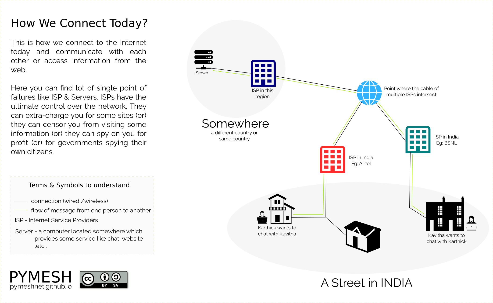

இன்று நாம் அனைவரும் நம்மை இனைத்துக் கொள்ளும் இணையத்தில் இருந்து தான் நமக்கு மெஷ்நெடின் தேவை எழுகிறது. இதைப் பற்றி மேலும் எளிமையான முறையில் காண்போம்,
இன்று பலரும் தங்களை இணையத்தில் இனைத்துக்கொள்ள இணையச் சேவை வழங்குபவர் ( Internet service provider (ISP)) என்னும் அமைப்பை அணுகுகிறார்கள் , இந்தியாவில் இருக்கும் சில ISPs,
இந்த ISPs அமைப்பு நம்மை எதாவது ஒரு பயன்பாட்டுக் கட்டணத்தை தேர்தெடுக்க செய்வார்கள் (அது பிராட்பேண்ட் இணைப்பாக இருந்தால் ) அல்லது ஒரு வயர்லெஸ் ட்ரான்சீவரை கட்டிடத்தின் மேல் பகுதியில் அமைப்பார்கள் (அது வயர்லெஸ் இணைப்பாக இருந்தால்) ஒவ்வொரு இணையம் சேவை வழங்குபவர்களும் (ISPs) வெவ்வேறு இண்டர் இணைப்புக் கொண்டவையாக இருக்கும், அதனால் இப்பொழுது நீங்கள் பிஎஸ்என்எல் (BSNL) இணைப்பு வைத்திருக்கிறீகள் மற்றும் உங்கள் நண்பன் அர்டல் (AIRTEL) இணைப்பு வைத்துள்ளார் என்றாலும் உங்கள் இருவறாலும் தொடர்புக்கொள்ள முடியும். கீழ் உள்ள படம் இந்த விளக்கத்தின் ஒரு பிரதிநிதித்துவமாகும்.
இப்பொழுது நாம் ஒரு காட்சியை சான்றாக கருதிக் கொள்வொம் , இந்த காட்சியில் இருவர் உள்ளனர் (கவிதா & கார்த்திக்). அவர்கள் ஒரே வீதியில் வசிக்கிறார்கள் மற்றும் அவர்கள் வெவ்வேறு ISPயில் இணைந்துள்ளார்கள். இப்பொழுது இருவரும் பேஸ்புக் அல்லது வாட்ஸ் அப் அல்லது டெலகரமில் தொடர்புக்கொள்கிறார்கள். கார்த்திக் கவிதாவை தொடர்கொள்ள குறுஞ் செய்தி அனுப்புகிறான்.
மேல் சான்றாக கூறபட்டுள்ளக் காட்சி கீழே உள்ளப் படத்தில் விரிவாக உள்ளது. ஒரு இயந்திரத்தில் இருந்து குறுஞ் செய்தி மற்றொரு இயந்திரத்திற்கு செல்வதை புரிந்துக் கொள்ள பச்சை வரியைப் பின்பற்றுங்கள். நடைமுறையில், குறுஞ் செய்தி ஒன்று ஒரு இயந்திரத்தில் இருந்து மற்றொரு இயந்திரத்திற்கு செல்வதற்கு பல இடைநிலை சாதனங்கள் தேவைபடும். ஆனால் இதை எளிமைபடுத்த நாங்கள் இறுதி சாதனங்கள் மற்றும் இடைநிலை சாதனங்களை மட்டும் கருதியுள்ளோம்.
